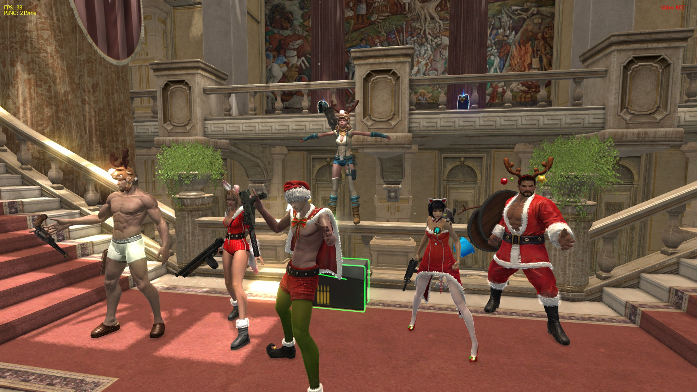

- Ability to Face Forward & Block while Side Stepping
- Added rocketlauncher stuns (But nerfed)
- All weapons swap speed have been increased to the electric type
- Spotify integration. Cmds: /pp, /playpause, /stop, /mute, /volup, /voldown, /next, /prev
- Suit up!
- Removed revengethirst. (You should not get the bonus crit or gain 1.5 more ZP) (?)
- Added textures made by Braqour, Knee, Rizzou and Me!
- Elena rifles increased magazine to 120, typewriter 160
- Elena ak series damage increase 24.2 -> 25.5
- Elim series accuracy increase (Max spread 90->85, spread "up" speed 18->15)
- Shotgun "twelve"/SPAS series have same stats as lightning 12
- Poked down lightning preditors piercing 45 -> 42
- Dual pistol cougar series piercing increase 25->30
- Hound, tiger,lion, dragon piercing increase 20->25
- Every Grade 3 (Blue)/Grade 4 (Orange) weapon has been made equal to its Grade 2 (Green) counterpart in stats.
- This includes everything, as well as the removal of dot damage
- TDW/Cannon series explosive radius 240/250 to 270 (Premium unchanged)
- Backdraft explosive radius 150/170 to 210 (Premium unchanged)
- Armor/Mass Breaker explosive radius 370 to 330.
- Rose will no longer do random fail attacks.
- Shotguns slightly more accurate
- Max HP set to 150
- Max AP set to 130
- Removed /join, /leave
- Z deplete when you die or when the round is over
- Camera can be toggled for ez printscreens KEY_7
- Removed the critical weapon layer effect (flashes whiteish when you crit)
- Removed flinch from ranged weapons. (nadelauncher, rocketlauncher, sniperrifle)
- Anti-godemode/hand of god fix (Removes the possibility of the most common godmode in gunz2.)
- Berserkmode (Host can toggle on and off berserkmode with the '9' key.)
- Removed target indicator
- Custom crosshair color (Hex value can be set in TTConfig.cfg in your gunz2 folder)
- Camera bugfix (Objects didn't draw properly when camera went through a wall-type-of-object.)
- Doubleshot removed
- Removed a few particles
- Overrides any ingame-textures with \GunZ 2 The Second Duel\Data\Texture
- Removed Lucky Bullet
- Some dmgd animation speeds are increased from 1.25 to 2.5 ("Half the melee stun time" )
- Removed the charactermarkers (Public enemy and nemesis)
- Gears at all levels will now give the same bonus value (Current same amount as a level 5 gear)
- All characters have a baseAP. (Allows you to customize your character more without the AP penalty)